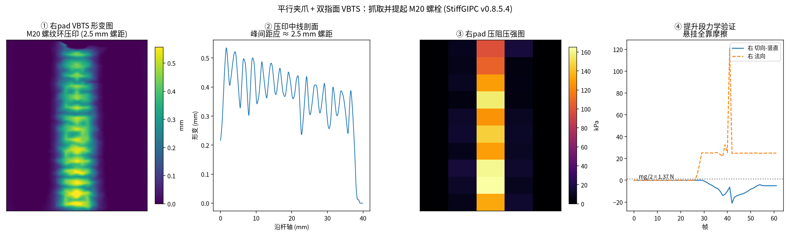
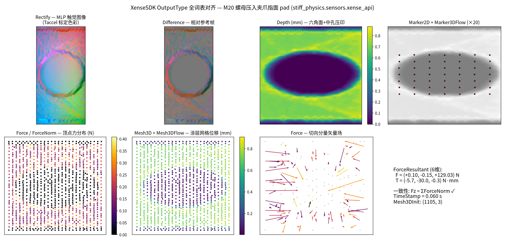
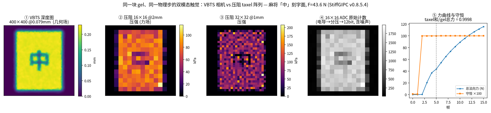
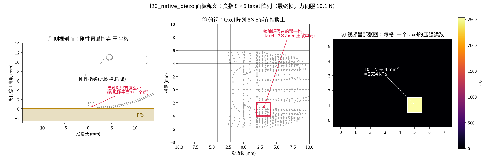
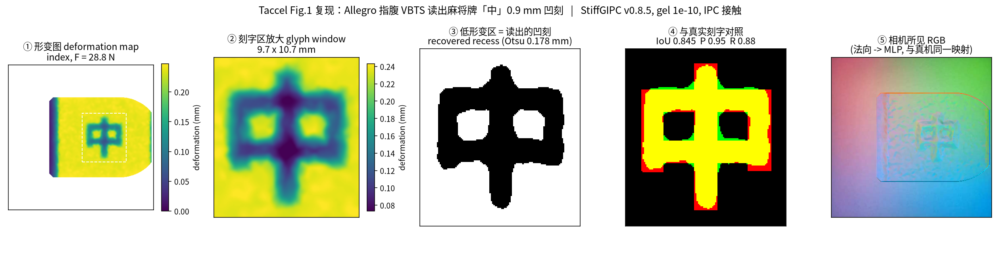

StiffGIPC 引擎上的完整触觉传感层：VBTS 视触觉（深度 / marker / RGB）、 压阻 taxel 阵列，以及与商用 视触 SDK 输出词表 1:1 对齐的接口。每一段结论都对应一个可运行的验证脚本。
商用 SDK OutputType 全词表 13/13 项在仿真上 1:1 可调用，selectSensorInfo 同帧语义、calibrateSensor 参考刷新。
查看验证面板 →仿数字孪生 UI：双 pad 触觉图 + 3D 视口 + 三轴力曲线。抓取并提起 M20 螺栓，全程离屏渲染成片。
观看视频 →平行夹爪双指面 VBTS pad（tetgen 任意规格制造），LinkerHand L20 原生接触面压阻，Allegro 通用 FK/IK 贴装。
查看方案 →螺纹压印峰距 = 2.5 mm 螺距；提升摩擦力收敛 mg/2 = 1.37 N；刻字成像 IoU 定量评分；4000 张数据集先例。
查看证据 →平行夹爪两指面各贴一块 40×20×3 mm FEM 凝胶 pad（4967 顶点），抓取直立的 M20 螺栓并提起 30 mm。 悬挂阶段螺栓全部重量由两侧 pad 的摩擦力承担。

对照商用视触 SDK 公开文档的 OutputType 枚举逐项实现：一次 selectSensorInfo 调用从单个引擎快照同帧取回全部 13 种输出（与其 SDK 的同帧保证一致），calibrateSensor 刷新无接触参考帧。

两条独立路线：VBTS 凝胶 pad 贴装指端（对指求解 + 共设计安装倾角 24.7°→6.3°）； 以及不加软体、直接用 LinkerHand L20 原生接触面做压阻感知。


触觉成像的可读性不靠肉眼下结论：刻字压印与 ground-truth 字形做 IoU / 查准 / 查全评分，配空白对照组； 仿真中多模态天然同帧同步，已有 4000 张数据集 + ResNet-18 分类 99.67% 的生成先例。

两层交付：引擎仓库内的改动（可复现构建），与随引擎发布的 stiff_physics.sensors 传感器包。
| 层 | 模块 | 功能 | 状态 |
|---|---|---|---|
| 引擎 feat/tactile-0854 | engine getters | 逐顶点接触力 / von Mises 读出 + 内容缓存移植 | 已推送 |
| MAS 序修复 | MAS 预条件器下 METIS 设备序 → 输入序还原（不修则逐顶点数据错乱） | 已推送 | |
| 缓冲扩容 | triplet 缓冲精确扩容 + 4096 槽位容量（大场景必需） | 已推送 | |
| 传感器包 stiff_physics.sensors | SensorAsset / fabricate | 任意尺寸 pad 四面体化制造（tetgen），Taccel 资产直读 | 完成 |
| GelBody | 凝胶接入引擎：stitch / anchor 两种已验证驱动模式 | 完成 | |
| GpuTactileRenderer | 深度图 / marker 阵列 / 法向观测（GPU） | 完成 | |
| TactileRenderer | n2rgb MLP 触觉 RGB 成像，任意分辨率 | 完成 | |
| PiezoTaxelArray | 压阻阵列：分箱守恒 + FSR 换能 + ADC，含守恒自检 | 完成 | |
| tactile_api | 商用 SDK OutputType 13 项对齐层（selectSensorInfo / calibrateSensor 同语义） | 完成 | |
| offscreen | pyrender/EGL 离屏渲染（焊接顶点 → 平滑法向） | 完成 | |
| allegro / linkerhand | 通用 URDF FK/IK/对指求解；L20 专用链与贴装共设计 | 完成 |
引擎与传感器包见 stiff-physics（v0.8.5.4 传感器构建）。 另有可在 Houdini/usdview 逐帧检查的 gripper_bolt.usdc（刚体 transform 动画、凝胶 points 动画）。
# 夹爪抓取-提起演示（求解 → 仪表盘视频 + 四联验证图） $PY scripts/scene_gripper.py && $PY scripts/render_gripper.py # 商用 SDK 13 项输出词表对齐验证（断言 + 面板图） $PY scripts/verify_sensor_api.py # $PY = STIFFGIPC_NATIVE_DIR=<engine>/build_311 PYTHONPATH=<engine> python3.11 (求解环境)